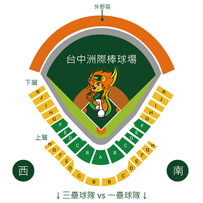

台中洲際棒球場 |
|
| 簡介 | |
| 台中洲際棒球場，原名台中國際標準棒球場，是台中市第二座符合國際標準的棒球場，由於位在台灣體院的台中棒球場腹地較為狹小，已無太多的空間擴建，設備老舊，容量較為不足等缺失，在台中地區棒壇人士的奔走之下，終於在2005年動工。 該球場的特色在於，是國內首座以美式風格做為架構的看台，視野較低也較為廣闊，而球場外圍棒球縫線造型的景觀設計，更象徵洲際棒球場的地標性。 中華職棒目前已在台中洲際球場舉辦過明星賽與總冠軍賽，第一場例行賽預定於2010年5月21日由統一7-ELEVEn獅與La new熊對戰。 |
|
| 場內座位資訊 | |
|  | |
| 觀眾數：19,000 席 / 內野數：14,400 席 / 外野數：4,600 席 / 內野：草皮 右外野：325 英呎 / 左外野：325 英呎 / 中外野：400 英呎 / 大螢幕：無 |
|
| 交通資訊 | |
| 坐高鐵轉公共交通工具 | 於各地坐高鐵到台中站 → 1. 轉台鐵區間車 (新烏日站 → 台中、潭子車站)，循上述方法到洲際棒球場。 2. 於高鐵站內客運轉運層搭乘 159路高鐵快捷接駁車到終點「台中公園」，下車後轉乘 12路、58路公車到台中洲際棒球場。 |
| 坐飛機轉公共交通工具 | 於各地坐飛機到台中航空站台中機場 → 轉乘 239路公車到忠勤新村 → 再轉乘 12路到台中洲際棒球場。 |
| 坐火車轉公車 | 1. 於各地坐火車到台中火車站 → 到火車站前廣場轉乘 58路、71路、127路公車到台中洲際棒球場。 2. 於各地坐火車到潭子火車站 → 到後站中山路出口左手邊站牌轉乘 58路公車到台中洲際棒球場。 |
| 客運轉公車的方法 | 1.於各地坐客運到台中車站 → 到火車站前廣場轉乘58路、71路、127路公車到台中洲際棒球場。 2. 於各地坐客運到統聯中港轉運站，搭乘 83路、87路或 150路到台中公園 (雙十路) 下車，再轉乘 12路、58路公車到台中洲際棒 球場。 |
| 自行開車 | 1. 國道1號：大雅 (中清) 交流道：往台中方向下交流道 → 下交流道後的第一個路口 → 左轉環中路往崇德路 → 直行約 3.2公里左右 即可到達。 2. 國道3號：北上可從快官交流道 → 中彰快速公路 (台74線) → 接環中路到台中洲際棒球場。 |
| 停車資訊 | 台中洲際棒球場提供 866個汽車停車位、2449個機車停車位供停車。大車停車費一次 100元，小汽車 50元，機車則不收費。 |